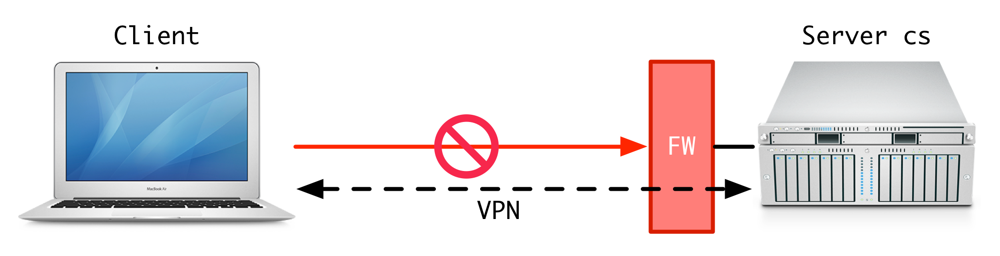
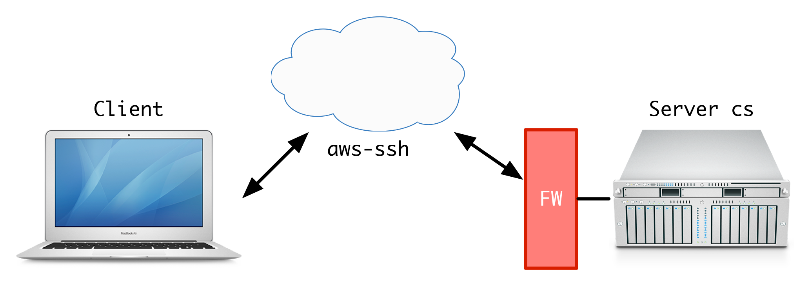

SSH behine firewall made easy
Tue, Jul 7, 2015Settings
SSH (Secure Shell) is a must-have tool for many developers who heavily rely on SSH to script and manage their remote servers. However, using SSH in reality is often not as handy as I’d expect.
- For example, if the remote server is behind a firewall or NAT (which is often the case when you’re using servers owned by enterprises or universities), SSH requires additional configuration or you’d have to setup a VPN prior to SSH. VPN is not that bad but it slows down the network quite significantly, as least in my case I can feel the latency.
- Even worse, if your remote server sits behind a router, say you have a Linux box at home, with no dedicated public IP from you IPS, it’s quite not easy to get SSH works. You need to configure port forwarding on the router, and figure out a way to broadcast the IP address.

All these inconveniences dwarf the handy nature of SSH. But we’ll not live with it. Fortunately, SSH is built-in with abilities to mitigate this — reverse SSH, aka SSH tunneling is a powerful feature yet some explanation is required to understand how it works and how to setup a hassle-free access to your remote server using this technique.
Step-by-step setup
The setting I’m dealing with is illustrated in the following figure. There are three parties involved:

- the remote server, with hostname
cs - a cloud server with public IP, with hostname
aws-ssh - the client, running ordinary
sshclient
setup reverse tunnel
To setup a reverse tunnel, one need firstly to inform the cloud server of the identity of our remote server, the other end-point of this SSH tunnel being established. To this end, execute this on the remote server:
ssh -fN -R 7000:localhost:22 -i aws-key.pem ec2-user@52.10.241.71
This command tell the cloud server (52.10.241.71) to forward all traffic
going to port 7000 to 22 on the other end of this channel.
In other words, if connecting to 52.10.241.71:7000, all traffic eventually
arrives at 22 port on remote server. Other parameters are also important,
-f: requests ssh to go to background just before command execution-N: do not execute a remote command-i: read inaws-key.pemas login the cloud server
To test whether reverse tunnel works, try to connect to localhost:22
on the AWS Server:
ssh fanz@localhost -p 7000
If prompted with login, great, it works!
connect from clients
Okay now we have a reverse tunnel working on the AWS server. Let’s move on to accept connections from clients. The simplest way for a client to connect to the remote server is to chain SSH commands in this way,
ssh -i aws-key.pem ec2-user@52.10.241.71 'ssh fz84@localhost -p 7000'
Straightforward as it seems, this method has a major drawback – it degraded security. Owners of the immediate AWS server can witness all traffic if he/she wants.
A better approach to this end is to use ProxyCommand feature, introduced in
OpenSSH v1.2. On the client, add the following to ~/.ssh/config:
Host aws-ssh
HostName 52.10.241.71
User ec2-user
IdentityFile aws-key.pem
Host cs
User fz48
ProxyCommand ssh -W localhost:7000 aws-ssh
Host: Defines for which host or hosts the configuration section applies. The section ends with a new Host section or the end of the file.User: Defines the username for the SSH connection. Useful if your username on the remote host is different from your local username.HostName: Defines the literal hostname for the remote server. Useful if a nickname for the host is used in the Host line.ProxyCommand: Specifies the proxy command for the connection. This command is launched prior to making the connection to Hostname.-W host:port: Requests that standard input and output on the client be forwarded to host on port over the secure channel.
The final mistery left is which command we should use to connect to cs.
It turn out to be very simple. Just type in ssh cs. It just works!
By doing this, the ProxyCommand is firstly executed, which forwards STDIN
and STDOUT to localhost:7000, then login to aws-ssh. Since we already
have a reverse tunnel “listening” on port 7000, whatever I/O happens toward
terminal is forwarded to that port, then the final stop, port 22 on cs.